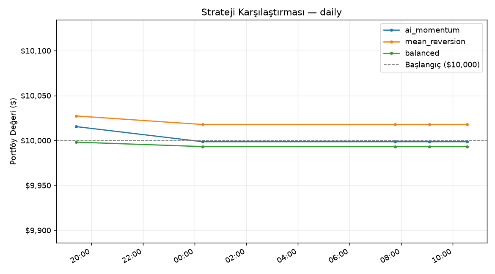

Son güncelleme: 2026-08-27 10:33 UTC · 🔬 Backtest raporu

Güncel değer: $9,998.55 (-1.45 $ / -0.01%) · Nakit: $339.16
| Sembol | Adet | Ort. Maliyet | Güncel Fiyat | Değişim | Giriş | Gerekçe |
|---|---|---|---|---|---|---|
| MSFT | 5 | $487.32 | $496.37 | +1.86% | 2026-08-24 | Momentum girişi: fiyat SMA20 (477.24) ve SMA50 (421.05) üzerinde, SPY'a göre 20 günde %22.2 güçlü. Stop: 467.93 (2xATR). |
| CRM | 9 | $209.29 | $205.62 | -1.75% | 2026-08-24 | Momentum girişi: fiyat SMA20 (194.35) ve SMA50 (175.45) üzerinde, SPY'a göre 20 günde %17.2 güçlü. Stop: 194.14 (2xATR). |
| SNOW | 4 | $322.98 | $315.37 | -2.36% | 2026-08-24 | Momentum girişi: fiyat SMA20 (317.96) ve SMA50 (280.3) üzerinde, SPY'a göre 20 günde %15.0 güçlü. Stop: 299.15 (2xATR). |
| PLTR | 5 | $175.97 | $177.50 | +0.87% | 2026-08-24 | Momentum girişi: fiyat SMA20 (159.5) ve SMA50 (139.83) üzerinde, SPY'a göre 20 günde %30.5 güçlü. Stop: 161.06 (2xATR). |
| SMCI | 13 | $35.17 | $37.39 | +6.33% | 2026-08-24 | Momentum girişi: fiyat SMA20 (33.11) ve SMA50 (30.55) üzerinde, SPY'a göre 20 günde %14.7 güçlü. Stop: 30.08 (2xATR). |
| ADP | 2 | $283.01 | $281.39 | -0.57% | 2026-08-25 | Momentum girişi: fiyat SMA20 (272.1) ve SMA50 (250.63) üzerinde, SPY'a göre 20 günde %7.7 güçlü, RSI=63.22 (<75, tepe değil). İzleyen stop: 270.56 (2xATR). |
| BKNG | 2 | $213.36 | $208.89 | -2.10% | 2026-08-25 | Momentum girişi: fiyat SMA20 (206.24) ve SMA50 (189.05) üzerinde, SPY'a göre 20 günde %10.9 güçlü, RSI=70.17 (<75, tepe değil). İzleyen stop: 199.49 (2xATR). |
| CHTR | 2 | $150.30 | $153.89 | +2.39% | 2026-08-25 | Momentum girişi: fiyat SMA20 (149.88) ve SMA50 (139.99) üzerinde, SPY'a göre 20 günde %10.9 güçlü, RSI=47.54 (<75, tepe değil). İzleyen stop: 135.73 (2xATR). |
| CMCSA | 16 | $27.02 | $27.20 | +0.67% | 2026-08-25 | Momentum girişi: fiyat SMA20 (25.43) ve SMA50 (24.11) üzerinde, SPY'a göre 20 günde %15.2 güçlü, RSI=72.28 (<75, tepe değil). İzleyen stop: 25.84 (2xATR). |
| CPRT | 9 | $33.26 | $32.67 | -1.77% | 2026-08-25 | Momentum girişi: fiyat SMA20 (30.7) ve SMA50 (29.57) üzerinde, SPY'a göre 20 günde %8.3 güçlü, RSI=72.18 (<75, tepe değil). İzleyen stop: 30.86 (2xATR). |
| CSGP | 7 | $32.84 | $32.14 | -2.13% | 2026-08-25 | Momentum girişi: fiyat SMA20 (31.03) ve SMA50 (30.07) üzerinde, SPY'a göre 20 günde %9.3 güçlü, RSI=62.0 (<75, tepe değil). İzleyen stop: 29.92 (2xATR). |
| DXCM | 2 | $91.06 | $88.96 | -2.31% | 2026-08-25 | Momentum girişi: fiyat SMA20 (86.19) ve SMA50 (77.94) üzerinde, SPY'a göre 20 günde %20.8 güçlü, RSI=59.96 (<75, tepe değil). İzleyen stop: 85.92 (2xATR). |
| GEHC | 2 | $74.19 | $73.31 | -1.19% | 2026-08-25 | Momentum girişi: fiyat SMA20 (71.72) ve SMA50 (66.83) üzerinde, SPY'a göre 20 günde %18.1 güçlü, RSI=68.7 (<75, tepe değil). İzleyen stop: 71.04 (2xATR). |
| MDLZ | 1 | $64.70 | $63.01 | -2.61% | 2026-08-25 | Momentum girişi: fiyat SMA20 (62.98) ve SMA50 (61.24) üzerinde, SPY'a göre 20 günde %3.3 güçlü, RSI=66.46 (<75, tepe değil). İzleyen stop: 62.23 (2xATR). |
| PYPL | 1 | $61.68 | $61.81 | +0.21% | 2026-08-25 | Momentum girişi: fiyat SMA20 (59.6) ve SMA50 (52.43) üzerinde, SPY'a göre 20 günde %6.7 güçlü, RSI=65.89 (<75, tepe değil). İzleyen stop: 58.74 (2xATR). |
Güncel değer: $10,017.72 (+17.72 $ / +0.18%) · Nakit: $828.99
| Sembol | Adet | Ort. Maliyet | Güncel Fiyat | Değişim | Giriş | Gerekçe |
|---|---|---|---|---|---|---|
| AMZN | 9 | $262.07 | $260.28 | -0.68% | 2026-08-25 | Dönüş teyitli giriş: RSI14 24.52 → 33.55 (32 eşiğini yukarı kırdı), fiyat uzun vadeli trend (SMA200=238.39) üzerinde. İzleyen stop: 246.73. |
| KIM | 78 | $24.22 | $24.03 | -0.78% | 2026-08-25 | Dönüş teyitli giriş: RSI14 22.53 → 33.05 (32 eşiğini yukarı kırdı), fiyat uzun vadeli trend (SMA200=22.59) üzerinde. İzleyen stop: 23.23. |
| UNH | 3 | $398.76 | $401.01 | +0.56% | 2026-08-25 | Dönüş teyitli giriş: RSI14 31.39 → 43.6 (32 eşiğini yukarı kırdı), fiyat uzun vadeli trend (SMA200=345.68) üzerinde. İzleyen stop: 374.84. |
| APH | 4 | $157.68 | $161.34 | +2.32% | 2026-08-25 | Dönüş teyitli giriş: RSI14 30.8 → 32.81 (32 eşiğini yukarı kırdı), fiyat uzun vadeli trend (SMA200=144.48) üzerinde. İzleyen stop: 143.29. |
| CDNS | 2 | $328.09 | $334.68 | +2.01% | 2026-08-25 | Dönüş teyitli giriş: RSI14 21.46 → 41.35 (32 eşiğini yukarı kırdı), fiyat uzun vadeli trend (SMA200=326.99) üzerinde. İzleyen stop: 305.38. |
| D | 8 | $66.96 | $66.91 | -0.07% | 2026-08-25 | Dönüş teyitli giriş: RSI14 31.8 → 40.03 (32 eşiğini yukarı kırdı), fiyat uzun vadeli trend (SMA200=63.17) üzerinde. İzleyen stop: 64.27. |
| GOOGL | 1 | $346.96 | $342.00 | -1.43% | 2026-08-25 | Dönüş teyitli giriş: RSI14 24.44 → 32.33 (32 eşiğini yukarı kırdı), fiyat uzun vadeli trend (SMA200=333.44) üzerinde. İzleyen stop: 331.07. |
| MGM | 7 | $43.48 | $43.46 | -0.05% | 2026-08-25 | Dönüş teyitli giriş: RSI14 30.96 → 38.11 (32 eşiğini yukarı kırdı), fiyat uzun vadeli trend (SMA200=39.22) üzerinde. İzleyen stop: 41.71. |
| AIG | 6 | $77.15 | $76.97 | -0.23% | 2026-08-26 | Dönüş teyitli giriş: RSI14 29.08 → 35.25 (32 eşiğini yukarı kırdı), fiyat uzun vadeli trend (SMA200=76.77) üzerinde. İzleyen stop: 73.84. |
| CFG | 5 | $70.50 | $70.49 | -0.01% | 2026-08-26 | Dönüş teyitli giriş: RSI14 29.97 → 39.14 (32 eşiğini yukarı kırdı), fiyat uzun vadeli trend (SMA200=62.64) üzerinde. İzleyen stop: 67.23. |
| HST | 14 | $22.49 | $22.43 | -0.24% | 2026-08-26 | Dönüş teyitli giriş: RSI14 25.63 → 35.73 (32 eşiğini yukarı kırdı), fiyat uzun vadeli trend (SMA200=20.04) üzerinde. İzleyen stop: 21.33. |
| JCI | 1 | $144.62 | $144.33 | -0.20% | 2026-08-26 | Dönüş teyitli giriş: RSI14 27.84 → 32.62 (32 eşiğini yukarı kırdı), fiyat uzun vadeli trend (SMA200=133.58) üzerinde. İzleyen stop: 135.36. |
Güncel değer: $9,993.12 (-6.88 $ / -0.07%) · Nakit: $191.23
| Sembol | Adet | Ort. Maliyet | Güncel Fiyat | Değişim | Giriş | Gerekçe |
|---|---|---|---|---|---|---|
| ADI | 6 | $371.17 | $371.80 | +0.17% | 2026-08-25 | Dengeli giriş: uzun vadeli trend sağlam (SMA200=341.39), RSI14=42.53 nötr bölgede, hacim ortalamanın 1.18x üzerinde. İzleyen stop: 347.87. |
| AMCR | 40 | $47.91 | $47.15 | -1.59% | 2026-08-25 | Dengeli giriş: uzun vadeli trend sağlam (SMA200=41.86), RSI14=54.4 nötr bölgede, hacim ortalamanın 1.22x üzerinde. İzleyen stop: 45.52. |
| CL | 15 | $92.55 | $92.06 | -0.53% | 2026-08-25 | Dengeli giriş: uzun vadeli trend sağlam (SMA200=86.34), RSI14=50.09 nötr bölgede, hacim ortalamanın 1.01x üzerinde. İzleyen stop: 88.91. |
| COF | 5 | $216.27 | $217.21 | +0.43% | 2026-08-25 | Dengeli giriş: uzun vadeli trend sağlam (SMA200=205.94), RSI14=43.03 nötr bölgede, hacim ortalamanın 1.29x üzerinde. İzleyen stop: 206.56. |
| F | 60 | $13.93 | $13.90 | -0.22% | 2026-08-25 | Dengeli giriş: uzun vadeli trend sağlam (SMA200=13.17), RSI14=47.98 nötr bölgede, hacim ortalamanın 1.11x üzerinde. İzleyen stop: 13.11. |
| KMI | 20 | $31.00 | $32.02 | +3.29% | 2026-08-25 | Dengeli giriş: uzun vadeli trend sağlam (SMA200=30.35), RSI14=46.7 nötr bölgede, hacim ortalamanın 1.26x üzerinde. İzleyen stop: 29.55. |
| NVDA | 2 | $208.48 | $209.66 | +0.57% | 2026-08-25 | Dengeli giriş: uzun vadeli trend sağlam (SMA200=195.17), RSI14=46.03 nötr bölgede, hacim ortalamanın 1.17x üzerinde. İzleyen stop: 196.70. |
| TTWO | 1 | $233.50 | $233.45 | -0.02% | 2026-08-25 | Dengeli giriş: uzun vadeli trend sağlam (SMA200=228.61), RSI14=44.97 nötr bölgede, hacim ortalamanın 1.17x üzerinde. İzleyen stop: 214.92. |
| VMRK | 4 | $68.14 | $66.83 | -1.92% | 2026-08-25 | Dengeli giriş: uzun vadeli trend sağlam (SMA200=62.6), RSI14=51.81 nötr bölgede, hacim ortalamanın 1.31x üzerinde. İzleyen stop: 65.05. |
| ARES | 1 | $142.76 | $141.98 | -0.55% | 2026-08-25 | Dengeli giriş: uzun vadeli trend sağlam (SMA200=131.58), RSI14=54.06 nötr bölgede, hacim ortalamanın 1.19x üzerinde. İzleyen stop: 133.32. |
| BBY | 2 | $85.29 | $87.44 | +2.52% | 2026-08-25 | Dengeli giriş: uzun vadeli trend sağlam (SMA200=69.87), RSI14=51.67 nötr bölgede, hacim ortalamanın 1.27x üzerinde. İzleyen stop: 79.64. |
| BF-B | 6 | $28.18 | $28.07 | -0.39% | 2026-08-25 | Dengeli giriş: uzun vadeli trend sağlam (SMA200=26.96), RSI14=47.98 nötr bölgede, hacim ortalamanın 1.07x üzerinde. İzleyen stop: 26.67. |
| UPS | 1 | $105.14 | $105.65 | +0.49% | 2026-08-25 | Dengeli giriş: uzun vadeli trend sağlam (SMA200=101.32), RSI14=47.14 nötr bölgede, hacim ortalamanın 1.45x üzerinde. İzleyen stop: 101.12. |
| WMB | 1 | $71.08 | $74.41 | +4.68% | 2026-08-25 | Dengeli giriş: uzun vadeli trend sağlam (SMA200=68.94), RSI14=47.75 nötr bölgede, hacim ortalamanın 1.11x üzerinde. İzleyen stop: 67.09. |
| AES | 5 | $14.73 | $14.73 | +0.03% | 2026-08-26 | Dengeli giriş: uzun vadeli trend sağlam (SMA200=14.26), RSI14=54.24 nötr bölgede, hacim ortalamanın 1.19x üzerinde. İzleyen stop: 14.64. |
| FE | 1 | $46.73 | $46.73 | +0.00% | 2026-08-27 | Dengeli giriş: uzun vadeli trend sağlam (SMA200=46.67), RSI14=48.06 nötr bölgede, hacim ortalamanın 1.03x üzerinde. İzleyen stop: 45.16. |
| UDR | 1 | $37.93 | $37.93 | +0.00% | 2026-08-27 | Dengeli giriş: uzun vadeli trend sağlam (SMA200=36.46), RSI14=49.3 nötr bölgede, hacim ortalamanın 1.2x üzerinde. İzleyen stop: 36.75. |